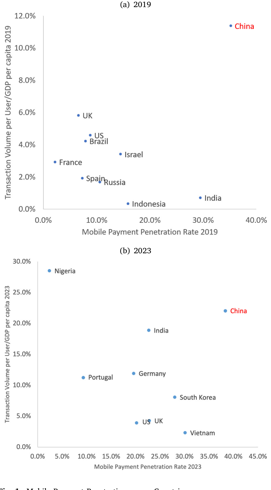
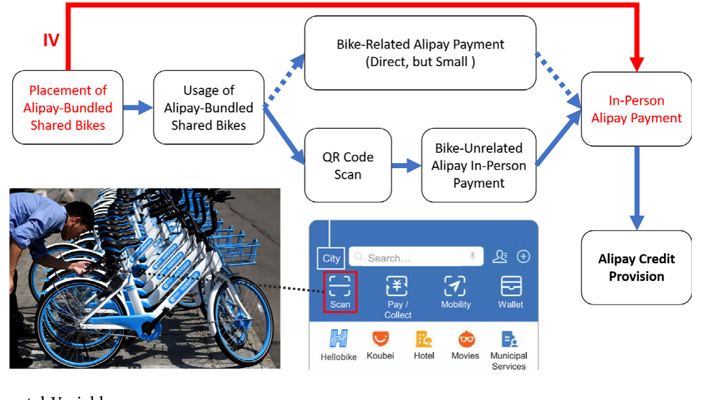
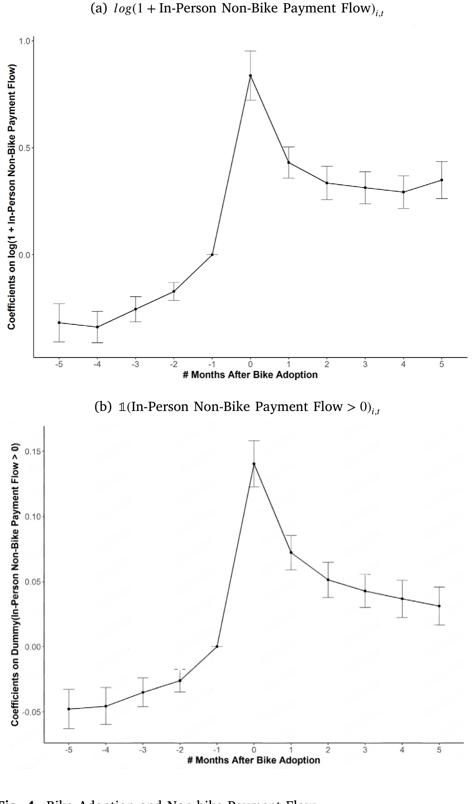
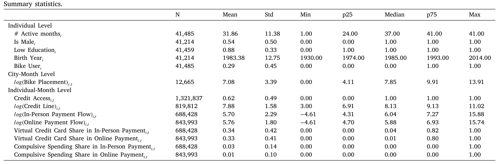
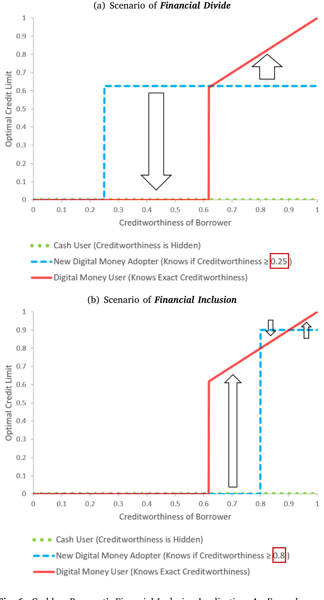
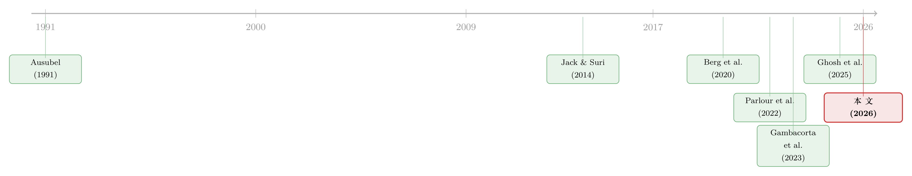

一辆共享单车，如何让1亿人「被看见」？——支付数据怎样重塑了普惠信贷
本文读的是 Ouyang (2026, Journal of Financial Economics)：作者用支付宝（Alipay）超 1 亿用户的行政数据，借「支付宝绑定的共享单车在各城市错峰铺开」这一天然实验作为工具变量，证明线下无现金支付的采用让用户获得信贷的概率提高了 56.3%，且支付流每上升 1%、授信额度上升 0.41%；更重要的是，这份「信息红利」最厚的一份，恰恰落在了过去最被金融体系忽视的人——年长者与低学历者——身上。
1 引言：一个老问题，和一个新答案
给穷人、给那些没有信用记录的人放贷，从来都是一件难事。
这句话不是抱怨，而是发展金融学几十年里反复碰壁后留下的共识。从 Helms (2006) 总结的小额信贷 (microcredit) 运动，到后来各国五花八门的普惠尝试，问题的内核始终没变：放贷方看不清借款人。没有工资单、没有征信报告、没有抵押物，一个想借 200 块钱周转的小贩，在传统银行的风控模型里几乎就是一片空白——而对着一片空白，理性的银行只会选择不放贷。于是「越穷越借不到、越借不到越穷」的循环就这样固化下来。
但最近十年，故事出现了一个谁也没料到的转折。真正撬动这个老问题的，既不是某项监管改革，也不是某笔扶贫基金，而是一件看上去和信贷毫不相干的东西：手机里的二维码。
中国是这场变迁最极端的样本。如图 1 所示，到 2019—2023 年间，中国的移动支付渗透率 (mobile payment penetration) 与人均交易额都把其他国家远远甩在身后；而正文里那个更刺眼的数字是——中国的移动支付规模从 2012 年占 GDP 的 4%，一路飙到 2021 年的 458%，同期美国的银行卡支付还不到 GDP 的 38%。当一个国家几乎所有交易——从打车、缴水电费到买路边摊的烤红薯——都沉淀成了一条条带时间戳的电子流水，一个自然的问题就冒了出来：这些支付数据，能不能反过来变成放贷的「燃料」？

Figure 1: Mobile Payment Penetration across Countries
这正是本文要回答的两个核心问题（沿用 Berg et al. (2022) 的提法）：支付流信息，是否在因果意义上推动了 BigTech 信贷的扩张？这种扩张，究竟是惠及了被传统金融体系遗忘的人，还是反而制造了更精巧的歧视？
注意，答案在理论上是含糊的。一方面，细致的支付数据确实能帮弱势群体「攒出」一份信用画像——它泄露了一个人稳定的收入流和消费模式；但另一方面，同样这份数据也可能让放贷方学会更隐蔽的「挑肥拣瘦」，把风险稍高的人精准地筛出去。到底哪股力量占上风，不能靠拍脑袋，得靠数据说话。而要让数据说话，第一步、也是最难的一步，是找到一个干净的外生冲击。
2 识别策略：把一辆共享单车，变成一台「外生注射器」
要识别支付对信贷的因果效应，最大的拦路虎是内生性 (endogeneity)：一个支付活跃的人，本来可能就是收入更高、更靠谱的人，他拿到更高的额度，根本不需要「支付数据」这个解释。换句话说，支付多和信贷好，可能只是同一个东西（这个人本来就行）的两个侧面。
那怎么找到一个「只影响支付、不直接影响其他」的外生变化？
作者的答案堪称神来之笔：支付宝绑定的共享单车 (Alipay-bundled shared bikes) 在各城市错峰铺开。
逻辑链条是这样的（如图 3 所示）。中国的无桩共享单车 (dockless bike-sharing) 靠扫码开锁——你得先扫那个二维码 (QR code)。而哈啰单车这类玩家与支付宝深度绑定，扫码这个动作天然把用户拽进了支付宝的线下支付场景。于是，当某个城市突然涌入大量支付宝系单车时，这座城市里支付宝用户的线下支付流 (in-person payment flow) 就会被外生地推高一截——不是因为这些人突然变有钱了，而仅仅因为他们门口多了一排能扫码骑走的车。

Figure 3: Logic Flow of the Instrumental Variable
这就构成了一个工具变量 (instrumental variable, IV)。它要成立需要两个条件：
相关性 (relevance)：城市层面的单车投放量，必须和当地支付宝用户的线下支付流强相关。作者的第一阶段证实了这一点。
排他性 (exclusion restriction)：单车投放只能通过线下无现金支付这一条路影响信贷，不能有别的暗道。这是 IV 最脆弱、也最需要辩护的地方。作者设计了一系列检验来堵漏：排除城市层面相关趋势的干扰、排除「爱骑车的人本来就不一样」的自选择、排除单车交易本身直接给放贷方发信号的可能、以及排除各城市投放时点并非随机或扎堆所带来的偏误。其中最关键的一张证据是图 4：它表明单车采用主要抬高的是「非单车」的那部分支付流——也就是说，骑车这件事改变的是一个人整体的线下扫码支付习惯，而不只是贡献了几笔几毛钱的骑行账单。如果效应全来自骑行本身那几笔小钱，排他性就危险了；但数据显示，被点燃的是更广阔的支付行为。

Figure 4: Bike Adoption and Non-bike Payment Flow
但真正关键的一步，还藏在被研究对象的产品设计里。作者盯的是支付宝的「花呗 (Huabei)」——一个虚拟信用卡产品。和传统信用卡截然不同，花呗无需申请，系统即时判定你是否够资格、能给多少额度。这个设计简直是为因果识别量身定做的：它几乎掐掉了需求端的选择偏误。传统信用卡里，你拿到额度是因为你去申请了、而你去申请是因为你需要钱——供给和需求纠缠不清；而花呗的额度是平台「单方面」推给你的，于是我们观察到的额度变化，可以更干净地归因于供给侧，也就是放贷方对你的看法变了。
3 数据：一份 130 万个「人—月」的全景图
本文用的是蚂蚁集团 (Ant Group) 的专有面板数据，颗粒度细到个人—年月。样本是 41,485 名支付宝用户，时间跨度从 2017 年 5 月到 2020 年 9 月，在「个人—月」层面构成了约 1,321,837 条授信记录的观测。
表 1 的描述统计透露了几个值得记住的背景数字：样本里 88% 的用户是低学历（本科以下），出生年份中位数在 1985 年；到 2020 年 9 月，72% 的用户有花呗额度，其中超 95% 用过；尤其值得玩味的是，在没有信用卡的人里，仍有 64% 用上了花呗——这一条，几乎就是「普惠」二字最直白的注脚。与此呼应的还有几个产品事实：花呗最低额度低到 20 元（约 3 美元），多数用户日利率 0.05%（年化 18.25%），而 2019 年 6 月其逾期率仅 1.16%，反而低于上市银行信用卡的 1.21%–2.49%——这是反常的，因为银行卡通常只发给更优质的客户。低违约率，恰恰暗示了支付宝的另类数据风控确实在起作用。

Table 1
4 主要结果：56.3% 与 0.41%
把 IV 跑起来，三组结果次第展开。
首先是扩展边际 (extensive margin)：一个月里只要用过线下支付，当月获得信贷的概率就提高 56.3%。这不是「相关」，而是被单车投放外生地推出来的因果效应。
接着是集约边际 (intensive margin)：在已经有授信的人里，线下支付流每上升 1%，授信额度上升 0.41%。考虑到中国数字支付市场的体量，这个弹性意味着相当可观的信贷扩张。
然后，一个自然的担忧浮上来：信贷一松，人会不会乱花钱、过度借贷？毕竟行为金融学早就警告过，自控力差、预期有偏的人在信贷面前容易翻车 (Ausubel, 1991; Melzer, 2011; Di Maggio and Yao, 2021)。作者用交易层面的品类数据做了事件研究 (event study)，结论是：获得信贷后，「冲动型消费」（香烟、游戏、彩票等）的占比并没有显著上升，也没看到过度消费的迹象。倒是消费水平整体抬升后没有回落，呼应了 Di Maggio et al. (2022) 在先买后付 (BNPL) 中发现的「捕蝇纸效应 (flypaper effect)」。
5 机制：支付流为什么能「看穿」一个人
钱借出去了、人也没乱花，那放贷方到底从支付流里读到了什么？
作者的回答分两层。第一层是信息：交易数据本身含有评估信用的有用信号，这与银行业文献中「贷款方相对储户拥有信息优势」的经典论断一脉相承 (Black, 1975)。关键的稳健性来自一个巧妙的切分——哪怕只看不含任何还款记录的非信贷交易，支付流对授信依然有显著正向影响。这就排除了「无非是平台看你按时还过钱」的平庸解释，坐实了一个更深的判断：一个人的支付行为，本身就泄露了他的收入与财务健康。
第二层是执行力 (enforcement)：支付流之所以有用，可能不只因为它能推断你还不还得起，还因为平台在你违约时能掐断你的金融服务通道——这正是 Brunnermeier and Payne (2022) 强调的平台执行能力。为了把「信息」和「执行/抵押」两条路分开，作者控制了一个抵押的代理变量——用户在支付宝上的资产管理规模 (assets under management, AUM)，因为这些资产理论上可在违约时被冻结。结果是：控制了 AUM 之后，支付流的信用信号依然稳健。也就是说，支付流的价值，主要来自它「让放贷方看懂了你」，而不仅仅是「攥住了你的把柄」。
6 金融普惠：信息冲击的双刃，为什么偏偏砍向了高墙
这才是全文最漂亮的反转。
直觉上，你也许会担心：更多数据 = 更精准的筛选 = 风险高的人被更狠地剔除。但本文用一个说明性的理论示例 (illustrative example) 指出，事情没这么简单。把支付数据的到来看成放贷方收到的一次「信息冲击」，那么对一个原本信用较差的借款人来说，这次冲击既可能让他的额度变高、也可能让他变低——取决于参数。原因在于：当先验把一个人「默认」为高风险时，一份真实的支付流哪怕只是中性的，也可能把他从「保守的低估」里捞出来；而对那些先验本就被高估的人，新信息反而可能戳破泡沫。换句话说，信息的分配效应，取决于谁原本被误判得最厉害。
那经验上落点在哪？作者发现：年长者与低学历者，在采用线下无现金支付后获得了更多的信贷。这和「这两类人在传统体系下信息最稀薄、因而支付数据带来的边际信息增量最大」的逻辑高度吻合——数据本身也显示，他们的金融活动更少、金融素养更低。一份在年轻高知人群身上「锦上添花」的数据，在这些人身上却是「雪中送炭」。

Figure 6: Cashless Payment’s Financial Inclusion Implication: An Example
这里的关键不是「数据多了大家都受益」，而是「数据填补的是信息最稀薄的那一格」。普惠效应之所以出现，恰恰因为被忽视者的画像此前最模糊——这也是为什么同样一份支付流，对不同人群的边际价值天差地别。
[!warning] 需要诚实地强调：第 6 节里那段关于「额度可上可下」的论证，是论文的一个说明性示例而非完整结构模型。它给出的是机制的直觉与方向，并不提供可校准的福利估计；作者自己在结语里也呼吁后续研究用更完整的理论框架来做正式的福利分析。因此本文不强行复现其方程，以免曲解。关于「信贷可得性对低收入群体究竟是福是祸」的另一面，可参见《罚款本是好工具，为什么这次罚出了一场信贷退潮？》；而关于金融素养如何改变弱势群体的金融结果，则可对照《一门高中理财课，能让金融犯罪少三成？》。
7 文献脉络：从「看不见的穷人」到「被数据照亮的人」
把这篇论文放回它生长的脉络里，会看得更清楚。
最早的一条线，是消费信贷市场的「老毛病」研究——Ausubel (1991) 揭示信用卡市场竞争失灵、Melzer (2011) 算出发薪日贷款的真实成本、Zinman (2015) 系统梳理了家庭债务的福利之谜。这些工作给后来者立了一个警钟：信贷扩张未必都是好事。
接着，是支付技术如何改变家庭行为的一条线。Jack and Suri (2014)、Suri and Jack (2016) 用肯尼亚 M-PESA 的移动货币革命，证明了低成本支付能改善风险分担、长期减贫；Bachas et al. (2021) 看借记卡如何帮穷人存钱；Hong et al. (2020) 看 FinTech 采用与家庭风险承担；Higgins (2024) 则刻画了无现金支付的网络外部性。但这条线长期聚焦在「降成本」上，几乎没人去问：数字化沉淀下来的数据本身值多少钱？

然后，BigTech 与 FinTech 信贷崛起，把「数据」推上了台前。Berg et al. (2020) 证明数字足迹 (digital footprints) 能预测违约；Frost et al. (2019)、Cornelli et al. (2020) 记录了 BigTech 信贷的全球扩张；Gambacorta et al. (2023) 那篇标题就叫《Data versus Collateral》，直指数据正在取代抵押品；Liu et al. (2022)、Hau et al. (2024) 则刻画 BigTech 放贷模型与企业成长。再往理论走，Parlour et al. (2022) 分析了 FinTech 争夺支付流的均衡，Ghosh et al. (2025) 把 FinTech 放贷与无现金支付直接接上。
而这篇论文所处的位置很清晰：它是这条脉络里第一篇用干净的外生冲击、在消费者层面、用 10 亿级 BigTech 平台数据，把「支付流 → 信贷」的因果链条钉死的工作。它与 Ghosh et al. (2025) 互补又分流——后者发现企业会策略性地采用无现金支付来发信号，而本文指出消费者的支付流更「天然」、更少策略性，因而消费者信贷对外生支付冲击的反应反而更直接。
8 评论与延伸（Q&A + 研究方向）
(a) 几个可能的疑问
Q：这个工具变量的排他性真的站得住吗？骑车的人会不会本来就和别人不一样？
这是最核心的担忧，作者也花了最大篇幅去堵。他用城市—月层面的投放量（而非个人是否骑车）作为冲击来源，缓解了个人自选择；又用图 4 证明被抬高的主要是「非单车」支付流，从而排除「单车交易本身直接给放贷方发信号」这条暗道；还检验了投放时点的非随机与扎堆问题。当然，城市层面若存在与单车投放同步、又独立影响信贷的经济活力冲击，仍是残余隐患——但作者的多重检验已把它压到相当低。
Q：和 Berg et al. (2020) 那种用数字足迹做信用评分的预测类研究，区别在哪？
区别是「预测」与「因果」。预测类工作回答「数据能不能预测违约」，但它有个软肋：一旦借款人摸清了评分规则，就会策略性地操纵自己的足迹 (Bjorkegren et al., 2020)，模型随之失真。本文用外生冲击估的是因果效应，绕开了这个操纵问题，外部效度也强于范围狭窄的田野实验。
Q：「概率提高 56.3%」是相对什么基准？听起来大得吓人。
这是扩展边际上的相对效应——指「当月用过线下支付」相对「没用过」，获得信贷概率的提升幅度。它不是说凭空多出半数人拿到信贷，而是刻画了支付这一行为在授信判定中的边际分量。结合样本里本就有 72% 用户有花呗，这个量级是可信的、也确实可观。
Q：信贷放松了，会不会只是把人推向过度借贷？
作者用品类级交易数据做了事件研究，没看到「冲动型消费」占比或过度消费的显著上升；消费抬升后不回落，更像「捕蝇纸效应」而非失控。但要注意，样本期到 2020 年、且违约率本就极低，长期、跨周期的债务可持续性仍待观察。
Q：怎么知道支付流是靠「信息」而不是靠「执行/抵押」起作用？
两招。其一，只用不含还款记录的非信贷交易，效应依然显著——说明价值来自对收入与财务健康的推断，而非还款历史。其二，控制 AUM（可被冻结的抵押代理）后信号仍稳健——说明并非单纯靠「攥住把柄」。两者合起来，把天平压向了信息渠道。
Q：为什么受益最大的是老人和低学历者，而不是「更多数据=更精准歧视」？
因为数据填的是信息最稀薄的那一格。这两类人在传统体系下画像最模糊，一份真实支付流带来的边际信息增量最大，于是从「保守的默认低估」里被捞出来的概率也最高。这正是论文那个理论示例的精髓：信息冲击的方向，取决于谁原本被误判得最狠。
(b) 几个可能的研究问题与提案
1. 把「支付流定价」搬到公司债/信用市场。 【经济故事】本文证明高频支付流能改善对个人创信用的评估；同样的逻辑能否用在企业身上？一家中小企业的收单流水、上下游回款节奏，理论上是比财报更高频、更难操纵的偿债信号，可能影响其贷款利差乃至公开债券的信用定价。 【可行性】中。需要把支付/收单数据与企业债务条款（利差、额度）匹配；中国可借助银行—企业流水数据，但获取难、且 Ghosh et al. (2025) 已提示企业存在策略性采用，识别需额外设计。
2. 支付数据冲击与二级市场信用流动性。 【经济故事】若放贷方因支付数据而更敢放贷，信用风险的信息环境随之改善，这是否会外溢到债券二级市场，收窄做市商的买卖价差、提升流动性？这把「信息→信贷」延伸到「信息→流动性」。 【可行性】低至中。难点在于把平台层面的支付数据冲击映射到公开债券市场的流动性指标，需要一个既影响信息环境、又对流动性外生的冲击；目前更像是一个理论假说而非可立即落地的实证。
3. 外资/跨境支付数据与移民、跨境小微的信贷可得性。 【经济故事】本文的弱势群体是「老人和低学历者」；一个平行群体是缺乏本地征信的移民或跨境经营者。跨境支付沉淀的数据能否同样为他们「补上信息缺口」？ 【可行性】中。需要跨境支付平台数据 + 本地信贷结果，并找到类似「单车」的外生采用冲击；数据壁垒高，但机制清晰、政策意义大。
4. 同一冲击下的福利核算。 【经济故事】作者坦承只给出了说明性示例。一个自然的下一步，是构建可校准的结构模型，把「信贷可得性上升的收益」与「过度负债的风险」放进同一个框架，对不同人群做正式的福利分解。 【可行性】中。需要消费、信贷、违约的联合面板（本文数据正好具备），难在对行为偏误参数的识别与校准。
5. 把设定平移到 BNPL / 美国场景做外部效度检验。 【经济故事】中国「超级 App」的高度整合是其结果的边界条件之一。在美国 BNPL 这类更碎片化、数据更分割的市场，支付流的信用信息价值是否同样强？ 【可行性】中至高。美国已有 BNPL 与征信匹配数据 (deHaan et al., 2024)，难点是找到可比的外生支付采用冲击。
我的判断
这篇论文最大的贡献，是把一句人人都在说、却没人真正证明过的话——「支付数据正在重塑普惠信贷」——用一个干净得近乎奢侈的外生冲击钉成了因果。共享单车这个 IV 既聪明又克制，作者对排他性的多重防守也做得相当扎实；而把「普惠效应集中在信息最稀薄人群」这一点讲透，更是让全文从「数据有用」上升到了「数据如何重新分配机会」的高度。
要说担忧，主要有三。其一，IV 终究依赖城市层面的外生性，若单车投放与地方经济活力的某些同步冲击相关，残余偏误难以彻底排除。其二，样本截至 2020 年、违约率极低、且处于花呗扩张的上行期，能否外推到信用周期下行、或监管收紧后的环境，是个真问号。其三，福利结论仍停留在说明性示例，「信贷可得性上升」与「过度负债风险」之间的净效应，本文给的是方向而非量级。
我接下来最想看到的，是把这套「支付流即信号」的逻辑接到公司债与信用市场上去，并配一个能做正式福利核算的结构框架——前者关乎外部效度，后者关乎我们到底该为这场「无现金普惠」鼓掌还是踩刹车。
参考文献
- Ausubel, L. M. (1991). The failure of competition in the credit card market. American Economic Review 81(1), 50–81.
- Bachas, P., Gertler, P., Higgins, S., Seira, E. (2021). How debit cards enable the poor to save more. Journal of Finance 76(4), 1913–1957.
- Berg, T., Burg, V., Gombović, A., Puri, M. (2020). On the rise of FinTechs: Credit scoring using digital footprints. Review of Financial Studies 33(7), 2845–2897.
- Berg, T., Fuster, A., Puri, M. (2022). FinTech lending. Annual Review of Financial Economics 14, 187–207.
- Black, F. (1975). Bank funds management in an efficient market. Journal of Financial Economics 2(4), 323–339.
- Brunnermeier, M., Payne, J. (2022). Platforms, tokens, and interoperability. Working Paper.
- Cornelli, G., Frost, J., Gambacorta, L., Rau, R., Wardrop, R., Ziegler, T. (2020). Fintech and big tech credit: A new database. Working Paper.
- deHaan, E., Kim, J., Lourie, B., Zhu, C. (2024). Buy now pay (pain?) later. Management Science 70(8), 5586–5598.
- Di Maggio, M., Katz, J., Williams, E. (2022). Buy now, pay later credit: User characteristics and effects on spending patterns. Working Paper.
- Di Maggio, M., Yao, V. (2021). Fintech borrowers: Lax screening or cream-skimming? Review of Financial Studies 34(10), 4565–4618.
- Frost, J., Gambacorta, L., Huang, Y., Shin, H. S., Zbinden, P. (2019). BigTech and the changing structure of financial intermediation. Economic Policy 34(100), 761–799.
- Gambacorta, L., Huang, Y., Li, Z., Qiu, H., Chen, S. (2023). Data versus Collateral. Review of Finance 27(2), 369–398.
- Ghosh, P., Vallee, B., Zeng, Y. (2025). FinTech lending and cashless payments. Working Paper.
- Hau, H., Huang, Y., Shan, H., Sheng, Z. (2024). FinTech credit and entrepreneurial growth. Journal of Finance 79(5), 3309–3359.
- Helms, B. (2006). Access for All: Building Inclusive Financial Systems. World Bank.
- Higgins, S. (2024). Financial technology adoption: Network externalities of cashless payments in Mexico. American Economic Review 114(11), 3469–3512.
- Jack, W., Suri, T. (2014). Risk sharing and transactions costs: Evidence from Kenya's mobile money revolution. American Economic Review 104(1), 183–223.
- Liu, L., Lu, G., Xiong, W. (2022). The big tech lending model. Working Paper.
- Melzer, B. T. (2011). The real costs of credit access: Evidence from the payday lending market. Quarterly Journal of Economics 126(1), 517–555.
- Parlour, C. A., Rajan, U., Zhu, H. (2022). When FinTech competes for payment flows. Review of Financial Studies 35(11), 4985–5024.
- Suri, T., Jack, W. (2016). The long-run poverty and gender impacts of mobile money. Science 354(6317), 1288–1292.
- Zinman, J. (2015). Household debt: Facts, puzzles, theories, and policies. Annual Review of Economics 7(1), 251–276.